中文
中文DØ Collaboration*
Editor’s Note
Although the standard model of particle physics is extremely successful, it does not in itself explain the masses of subatomic particles. Instead, they are hypothesized to arise from the interactions of particles with the so-called Higgs boson. Here an international team called the D0 collaboration, working at the Tevatron supercollider at Fermilab in Illinois, report a high-precision measurement of the mass of the top quark, which helps to constrain the range of allowable masses for the Higgs boson. The results suggest that it is more massive than was previously thought, so that more energy will be required to make it. The Higgs boson was finally observed in the Large Hadron Collider at CERN in Geneva in 2012. Its mass is lighter than was expected. 中文
The standard model of particle physics contains parameters—such as particle masses—whose origins are still unknown and which cannot be predicted, but whose values are constrained through their interactions. In particular, the masses of the top quark (Mt) and W boson (MW)1 constrain the mass of the long-hypothesized, but thus far not observed, Higgs boson. A precise measurement of Mt can therefore indicate where to look for the Higgs, and indeed whether the hypothesis of a standard model Higgs is consistent with experimental data. As top quarks are produced in pairs and decay in only about 10－24 s into various final states, reconstructing their masses from their decay products is very challenging. Here we report a technique that extracts more information from each top-quark event and yields a greatly improved precision (of±5.3 GeV / c2) when compared to previous measurements2. When our new result is combined with our published measurement in a complementary decay mode3 and with the only other measurements available2, the new world average for Mt becomes4 178.0±4.3 GeV / c2. As a result, the most likely Higgs mass increases from the experimentally excluded5 value6 of 96 to 117 GeV / c2, which is beyond current experimental sensitivity. The upper limit on the Higgs mass at the 95% confidence level is raised from 219 to 251 GeV / c2. 中文
THE discovery of the top quark in 1995 served as one of the major confirmations of the validity of the standard model (SM)7,8. Of its many parameters, the mass of the top quark, in particular, reflects some of the most crucial aspects of the SM. This is because, in principle, the top quark is point-like and should be massless; yet, through its interactions with the hypothesized Higgs field, the physical mass of the top quark appears to be about the mass of a gold nucleus. Because it is so heavy, the top quark (along with the W boson) provides an unusually sensitive tool for investigating the Higgs field. MW is known to a precision of 0.05%, while the uncertainty on Mt is at the 3% level1. Improvements in both measurements are required to restrict further the allowed range of mass for the Higgs; however, given the large uncertainty in Mt, an improvement in its precision is particularly important. As has been pointed out recently9,10, a potential problem for the SM is that, on the basis of the currently accepted value for Mt, the most likely value of the Higgs mass6 lies in a range that has already been excluded by experiment5. Precise knowledge of the Higgs mass is crucial for our understanding of the SM and any possible new physics beyond it. For example, in a large class of supersymmetric models (theoretically preferred solutions to the deficiencies of the SM), the Higgs mass has to be less than about 135 GeV / c2. Although, unlike the SM, supersymmetry predicts more than one Higgs boson, the properties of the lightest one are expected to be essentially the same as those for the SM Higgs boson. Thus, if the SM-like Higgs is heavier than about 135 GeV / c2, it would disfavour a large class of supersymmetric models. In addition, some of the current limits on supersymmetric particles from LEP11 are extremely sensitive to Mt. In fact, for Mt greater than 179 GeV / c2, the bounds on one of the major supersymmetry parameters, tanβ, which relates the properties of the SM-like Higgs boson and its heavier partners, would disappear completely12. Hence, in addition to the impact on searches for the Higgs boson, other important consequences call for improved precision on Mt, and this goal is the main subject of this paper. 中文
The DØ experiment at the Fermilab Tevatron has studied a sample of
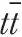
events produced in proton–antiproton (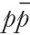
) interactions13. The total energy of 1.8 TeV released in a head-on collision of a 900-GeV p and a 900-GeV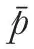
is almost as large as the rest energy of ten gold nuclei. Each top (antitop) quark decays almost immediately into a bottom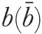
quark and a W+ (W－) boson, and we have reexamined those events in which one of the W bosons decays into a charged lepton (electron or muon) and a neutrino, and the other W into a quark and an antiquark (see Fig. 1). These events and their selection criteria are identical to those used to extract the mass of the top quark in our previous publication, and correspond to an integrated luminosity of 125 events per pb. (That is, given the production cross-section of the in collisions at 1.8 TeV of 5.7 pb, as measured by DØ14, these data correspond to approximately 700 produced pairs, a fraction of which is fully detected in various possible decay modes. Approximately 30% of these correspond to the lepton + jets topology categorized in Fig. 2, where “jet” refers to products of the fragmentation of a quark into a collimated group of particles that are emitted along the quark’s original direction.) The main background processes correspond to multijet production (20%), where one of the jets is reconstructed incorrectly as a lepton, and the W + jets production with leptonic W decays (80%), which has the same topology as the signal. 中文
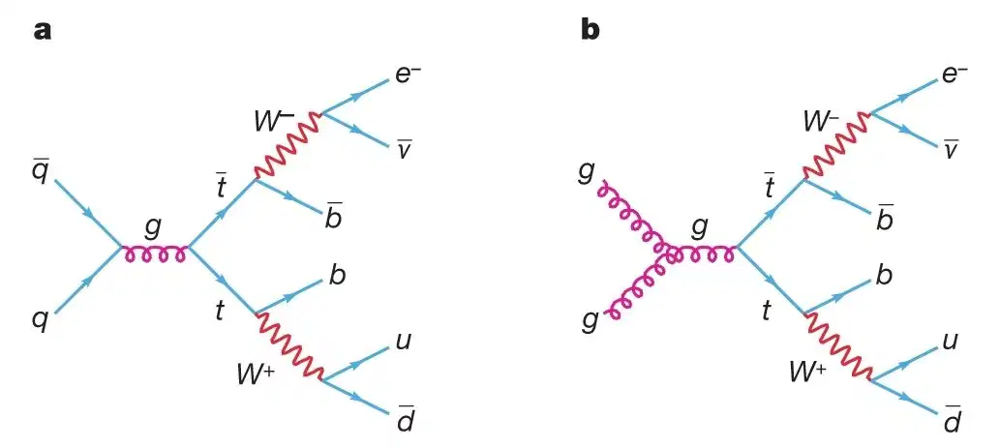
Fig. 1. Feynman diagrams for production in collisions, with subsequent decays into an electron, neutrino, and quarks. Quark–antiquark production (a) is dominant, but gluon fusion (b) contributes ~10% to the cross-section. This particular final state
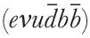
is one of the channels used in the analysis. 中文
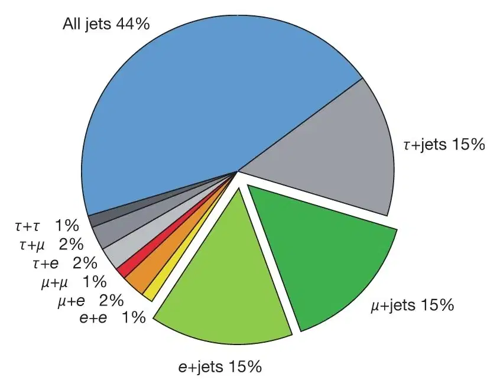
Fig. 2. Relative importance of various decay modes. The “lepton+jets” channel used in this analysis corresponds to the two offset slices of the pie-chart and amounts to 30% of all the decays 中文
The previous DØ measurement of Mt in this lepton + jets channel is Mt =173.3±5.6 (stat)±5.5 (syst) GeV / c2, and is based on 91 candidate events. Information pertaining to the older analysis and the DØ detector can be found elsewhere13,15. 中文
The new method of Mt measurement is similar to one suggested previously (ref. 16 and references therein, and ref. 17) for dilepton decay channels (where both W bosons decay leptonically), and used in previous mass analyses of dilepton events3, and akin to an approach suggested for the measurement of the mass of the W boson at LEP18-20. The critical differences from previous analyses in the lepton + jets decay channel lie in: (1) the assignment of more weight to events that are well measured or more likely to correspond to signal, and (2) the handling of the combinations of final-state objects (lepton, jets and imbalance in transverse momentum, the latter being a signature for an undetected neutrino) and their identification with top-quark decay products in an event (such as from ambiguity in choosing jets that correspond to b or
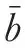
quarks from the decays of the t and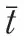
quarks). Also, because leading-order matrix elements were used to calculate the event weights, only events with exactly four jets are kept in this analysis, resulting in a candidate sample of 71 events. Although we are left with fewer events, the new method for extracting Mt provides substantial improvement in both statistical and systematic uncertainties. 中文
We calculate as a function of Mt the differential probability that the measured variables in any event correspond to signal. The maximum of the product of these individual event probabilities provides the best estimate of Mt in the data sample. The impact of biases from imperfections in the detector and event-reconstruction algorithms is taken into account in two ways. Geometric acceptance, trigger efficiencies, event selection, and so on enter through a multiplicative acceptance function that is independent of Mt. Because the angular directions of all the objects in the event, as well as the electron momentum, are measured with high precision, their measured values are used directly in the calculation of the probability that any event corresponds to or background production. The known momentum resolution is used to account for uncertainties in measurements of jet energies and muon momenta. 中文
As in the previous analysis13, momentum conservation in γ+jet events is used to check that the energies of jets in the experiment agree with Monte Carlo (MC) simulations. This calibration has an uncertainty δE=(0.025E+0.5 GeV). Consequently, all jet energies in our sample are rescaled by ±δE, the analysis redone, and half of the difference in the two rescaled results for Mt (δMt=3.3 GeV / c2) is taken as a systematic uncertainty from this source. All other contributions to systematic uncertainty: MC modelling of signal (δMt=1.1 GeV / c2) and background (δMt=1.0 GeV / c2), effect of calorimeter noise and event pile-up (δMt=1.3 GeV / c2), and other corrections from Mt extraction (δMt=0.6 GeV / c2) are much smaller, and discussed in detail elsewhere21,22. It should be noted that the new mass measurement method provides a significant (about 40%, from ±5.5 to ±3.9 GeV / c2) reduction in systematic uncertainty, which is ultimately dominated by the measurement of jet energies. For details on the new analysis, see the Methods. 中文
The final result is Mt=180.1±3.6 (stat)±3.9 (syst) GeV / c2. The improvement in statistical uncertainty over our previous measurement is equivalent to collecting a factor of 2.4 as much data. Combining the statistical and systematic uncertainties in quadrature, we obtain Mt=180.1±5.3 GeV / c2, which is consistent with our previous measurement in the same channel (at about 1.4 standard deviations), and has a precision comparable to all previous Mt measurements combined1. 中文
The new measurement can be combined with that obtained for the dilepton sample that was also collected at DØ during run I (ref. 3) (Mt=168.4±12.3 (stat)±3.6 (syst) GeV / c2), to yield the new DØ average for the mass of the top quark:
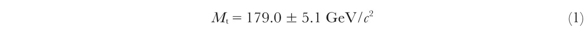
Combining this with measurements from the CDF experiment2 provides a new “world average” (based on all measurements available) for the mass of the top quark4:
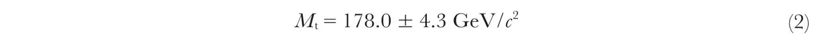
dominated by our new measurement. This new world average shifts the best-fit value of the expected Higgs mass from 96 GeV / c2 to 117 GeV / c2 (see Fig. 3), which is now outside the experimentally excluded region, yet accessible in the current run of the Tevatron and at future runs at the Large Hadron Collider (LHC), at present under construction at CERN. (The upper limit on the Higgs mass at the 95% confidence level changes from 219 GeV / c2 to 251 GeV / c2.) Figure 3 shows the effect of using only the new DØ top mass for fits to the Higgs mass, and indicates a best value of 123 GeV / c2 and the upper limit of 277 GeV / c2 at the 95% confidence level. It should be noted that the horizontal scale in Fig. 3 is logarithmic, and the limits on the Higgs boson mass are therefore asymmetric. 中文
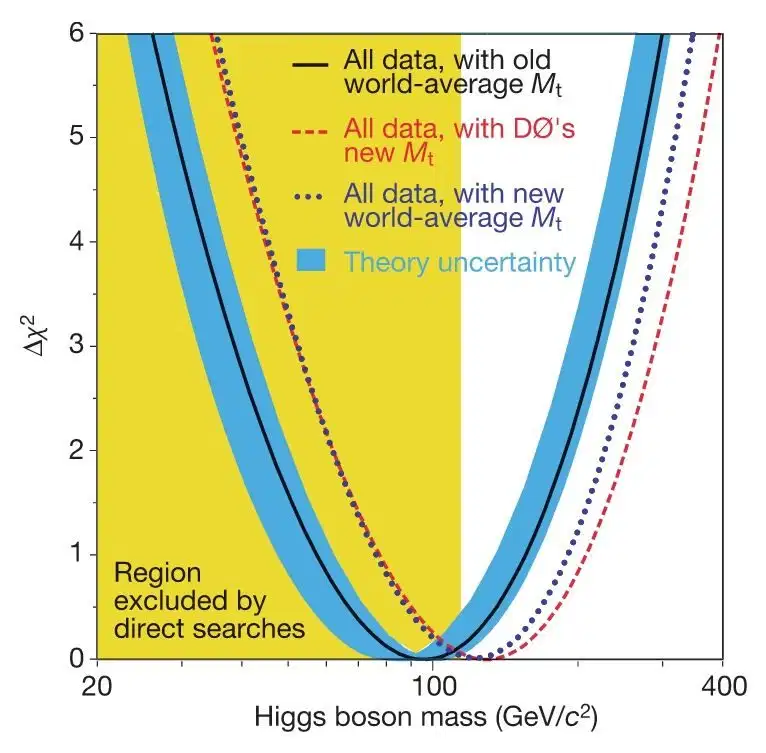
Fig. 3. Current experimental constraints on the mass of the Higgs boson. The χ2 for a global fit to electroweak data6 is shown as a function of the Higgs mass. The solid line corresponds to the result for the previous world-averaged Mt=174.3±5.1 GeV / c2, with the blue band indicating the impact of theoretical uncertainty. The dotted line shows the result for the new world-average Mt of 178.0±4.3 GeV / c2, whereas the dashed line corresponds to using only the new DØ average of 179.0±5.1 GeV / c2. The yellow-shaded area on the left indicates the region of Higgs masses excluded by experiment (>114.4 GeV / c2 at the 95% confidence level5). The improved Mt measurement shifts the most likely value of the Higgs mass above the experimentally excluded range. 中文
The new method is already being applied to data being collected by the CDF and DØ experiments at the new run of the Fermilab Tevatron and should provide even higher precision on the determination of Mt, equivalent to more than a doubling of the data sample, relative to using the conventional method. An ultimate precision of about 2 GeV / c2 on the mass of the top quark is expected to be reached in several years of Tevatron operation. Further improvement may eventually come from the LHC. 中文
Methods
The probability density as a function of Mt can be written as a convolution of the calculable cross-section and any effects from measurement resolution
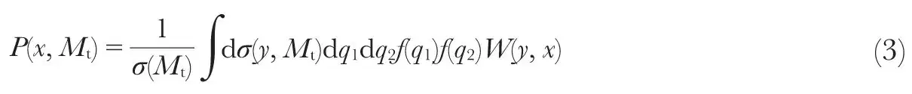
where W(y, x), our general transfer function, is the normalized probability for the measured set of variables x to arise from a set of nascent (partonic) variables y, dσ(y, Mt) is the partonic theoretical differential cross-section, f(q) are parton distribution functions that reflect the probability of finding any specific interacting quark (antiquark) with momentum q within the proton (antiproton), and σ(Mt) is the total cross-section for producing . The integral in equation (3) sums over all possible parton states, leading to what is observed in the detector. 中文
The acceptance of the detector is given in terms of a function A(x) that relates the probability Pm(x, Mt) of measuring the observed variables x to their production probability P(x, Mt): Pm(x, Mt)=A(x)P(x, Mt). Effects from energy resolution, and so on are taken into account in the transfer function W(y, x). The integrations in equation (3) over the eleven well-measured variables (three components of charged-lepton momentum and eight jet angles) and the four equations of energy-momentum conservation leave five integrals that must be performed to obtain the probability that any event represents (or background) production for some specified value of Mt. 中文
The probability for a interpretation can be written as:
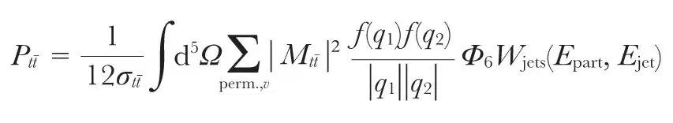
where Ω represent a set of five integration variables,
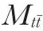
is the leading-order matrix element for production23,24, f(q1) and f(q2) are the CTEQ4M parton distribution functions for the incident quarks25, Φ6 is the phase-space factor for the six-object final state, and the sum is over all 12 permutations of the jets and all possible neutrino solutions. Wjets(Epart, Ejet) corresponds to a function that maps parton-level energies Epart to energies measured in the detector Ejet and is based on MC studies. A similar expression, using a matrix element for W+jets production (the dominant background source) that is independent of Mt, is used to calculate the probability for a background interpretation, Pbkg. 中文
Studies of samples of HERWIG (ref. 26; we used version 5.1) MC events indicate that the new method is capable of providing almost a factor-of-two reduction in the statistical uncertainty on the extracted Mt. These studies also reveal that there is a systematic shift in the extracted Mt that depends on the amount of background there is in the data. To minimize this effect, a selection is introduced, based on the probability that an event represents background. The specific value of the Pbkg cut-off is based on MC studies carried out before applying the method to data, and, for Mt=175 GeV / c2, retains 71% of the signal and 30% of the background. A total of 22 data events out of our 71 candidates pass this selection. 中文
The final likelihood as a function of Mt is written as:
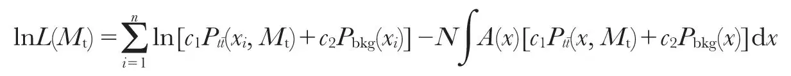
The integration is performed using MC methods. The best value of Mt (when L is at its maximum Lmax) represents the most likely mass of the top quark in the final N-event sample, and the parameters ci reflect the amounts of signal and background. MC studies show that there is a downward shift of 0.5 GeV / c2 in the extracted mass, and this correction is applied to the result. Reasonable changes in the cut-off on Pbkg do not have a significant impact on Mt. 中文
Figure 4 shows the value of L(Mt) / Lmax as a function of Mt for the 22 events that pass all selection criteria, after correction for the 0.5 GeV / c2 bias in mass. The likelihood is maximized with respect to the parameters ci at each mass point. The gaussian fit in the figure yields Mt=180.1 GeV / c2, with a statistical uncertainty of δMt=3.6 GeV / c2. The systematic uncertainty, dominated by the measurement of jet energies, as discussed above, amounts to δMt=3.9 GeV / c2. When added in quadrature to the statistical uncertainty from the fit, it yields the overall uncertainty on the new Mt measurement of ±5.3 GeV / c2. 中文
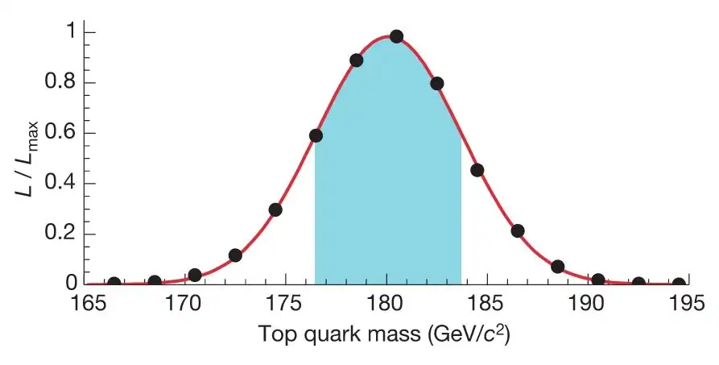
Fig. 4. Determination of the mass of the top quark using the maximum-likelihood method. The points represent the likelihood of the fit used to extract Mt divided by it maximum value, as a function of Mt (after a correction for a -0.5 GeV / c2 mass bias, see text). The solid line shows a gaussian fit to the points. The maximum likelihood corresponds to a mass of 180.1 GeV / c2, which is the new DØ measurement of Mt in the lepton+jets channel. The shaded band corresponds to the range of ±1 standard deviation, and indicates the ±3.6 GeV / c2 statistical uncertainty of the fit. 中文
(429, 638-642; 2004)
Received 23 January; accepted 21 April 2004; doi:10.1038 / nature02589.
References:
1. Hagiwara, K. et al. Review of particle physics. Phys. Rev. D 66, 010001 (2002).
2. Affolder, T. et al. (CDF Collaboration). Measurement of the top quark mass with the Collider Detector at Fermilab. Phys. Rev. D 63, 032003 (2001).
3. Abbott, B. et al. (DØ Collaboration). Measurement of the top quark mass in the dilepton channel. Phys. Rev. D 60, 052001 (1999).
4. The CDF Collaboration, the DØ Collaboration, and the TEVATRON Electro-Weak Working Group. Combination of CDF and DØ Results on the Top-Quark Mass. Preprint at http://www.arXiv.org / hep-ex / 0404010 (2004).
5. Barate, R. et al. (ALEPH Collaboration, DELPHI Collaboration, L3 Collaboration, OPAL Collaboration, and LEP Working Group for Higgs boson searches). Search for the standard model Higgs boson at LEP. Phys. Lett. B 565, 61-75 (2003).
6. The LEP Collaborations ALEPH, DELPHI, L3, and OPAL, the LEP Electroweak Working Group, and the SLD Heavy Flavour Group. A combination of preliminary electroweak measurements and constraints on the standard model. Preprint at http://www.arXiv.org / hep-ex / 0312023 (2003).
7. Abe, F. et al. (CDF Collaboration). Observation of top quark production in collisions with the Collider Detector at Fermilab. Phys. Rev. Lett. 74, 2626-2631 (1995).
8. Abachi, S. et al. (DØ Collaboration). Observation of the top quark. Phys. Rev. Lett. 74, 2632-2637 (1995).
9. Ellis, J. The 115 GeV Higgs odyssey. Comments Nucl. Part. Phys. A 2, 89-103 (2002).
10. Chanowitz, M. S. Electroweak data and the Higgs boson mass: a case for new physics. Phys. Rev. D 66, 073002 (2002).
11. The LEP Collaborations ALEPH, DELPHI, L3 & OPAL, the LEP Higgs Working Group. Searches for the neutral Higgs bosons of the MSSM: preliminary combined results using LEP data collected at energies up to 209 GeV. Preprint at http://www.arXiv.org / hep-ex / 0107030 (2001).
12. Degrassi, G., Heinemeyer, S., Hollik, W., Slavich, P. & Weiglein, G. Towards high-precision predictions for the MSSM Higgs sector. Eur. Phys. J. C 28, 133-143 (2003).
13. Abbott, B. et al. (DØ Collaboration). Direct measurement of the top quark mass by the DØ collaboration. Phys. Rev. D 58, 052001 (1998).
14. Abazov, V. M. et al. (DØ Collaboration). production cross section in collisions at
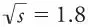
TeV. Phys. Rev. D 67, 012004 (2003).15. Abachi, S. et al. (DØ Collaboration). The DØ detector. Nucl. Instrum. Methods A 338, 185-253 (1994).
16. Dalitz, R. H. & Goldstein, G. R. Test of analysis method for top–antitop production and decay events. Proc. R. Soc. Lond. A 445, 2803-2834 (1999).
17. Kondo, K. et al. Dynamical likelihood method for reconstruction of events with missing momentum. 3: Analysis of a CDF high pT eμ event as production. J. Phys. Soc. Jpn 62, 1177-1182(1993).
18. Berends, F. A., Papadopoulos, C. G. & Pittau, R. On the determination of MW and TGCs in W-pair production using the best measured kinematical variables. Phys. Lett. B 417, 385-389 (1998).
19. Abreu, P. et al. (DELPHI Collaboration). Measurement of the W pair cross-section and of the W Mass in e+e－ interactions at 172 GeV. Eur. Phys. J. C 2, 581-595 (1998).
20. Juste, A. Measurement of the W mass in e+e－ annihilation PhD thesis, 1-160, Univ. Autonoma de Barcelona (1998).
21. Estrada, J. Maximal use of kinematic information for extracting the top quark mass in single-lepton events PhD thesis, 1-132, Univ. Rochester (2001).
22. Canelli, F. Helicity of the W boson in single-lepton events PhD thesis. 1-241, Univ. Rochester (2003).
23. Mahlon, G. & Parke, S. Angular correlations in top quark pair production and decay at hadron colliders. Phys. Rev. D 53, 4886-4896 (1996).
24. Mahlon, G. & Parke, S. Maximizing spin correlations in top quark pair production at the Tevatron. Phys. Lett. B 411, 173-179 (1997).
25. Lai, H. L. et al. (CTEQ Collaboration). Global QCD analysis and the CTEQ parton distributions. Phys. Rev. D 51, 4763-4782 (1995).
26. Marchesini, G. et al. HERWIG: a Monte Carlo event generator for simulating hadron emission reactions with interfering gluons. Comput. Phys. Commun. 67, 465-508 (1992).
Acknowledgements. We are grateful to our colleagues A. Quadt and M. Mulders for reading of the manuscript and comments. We thank the staffs at Fermilab and collaborating institutions, and acknowledge support from the Department of Energy and National Science Foundation (USA), Commissariat à L’Energie Atomique and CNRS / Institut National de Physique Nucléaire et de Physique des Particules (France), Ministry for Science and Technology and Ministry for Atomic Energy (Russia), CAPES, CNPq and FAPERJ (Brazil), Departments of Atomic Energy and Science and Education (India), Colciencias (Colombia), CONACyT (Mexico), Ministry of Education and KOSEF (South Korea), CONICET and UBACyT (Argentina), The Foundation for Fundamental Research on Matter (The Netherlands), PPARC (UK), Ministry of Education (Czech Republic), the A. P. Sloan Foundation, and the Research Corporation.
Authors’ contributions. We wish to note the great number of contributions made by the late Harry Melanson to the DØ experiment, through his steady and inspirational leadership of the physics, reconstruction and algorithm efforts.
Competing interests statement. The authors declare that they have no competing financial interests.
Correspondence and requests for materials should be addressed to J. Estrada (estrada@fnal.gov).
* A full list of participants and affiliations is given in the original paper.